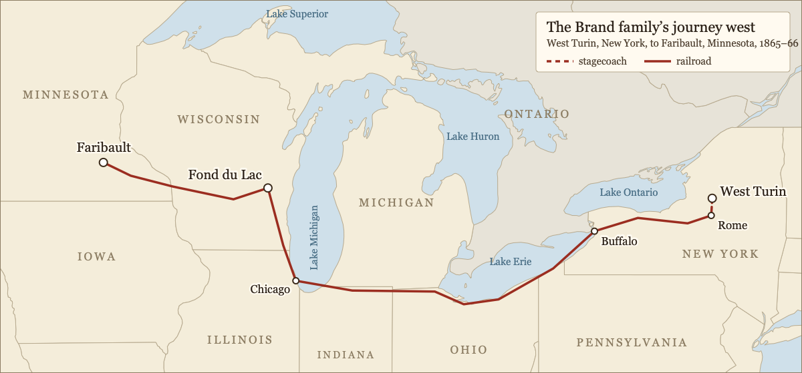
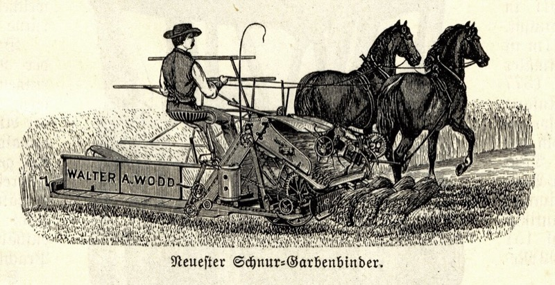

Book 1: Sarah Etta
Chapter 2: Good-bye, New York; Hello, Minnesota
After my aunt’s conviction and sentencing, everyone was devastated. My grandparents took care of my cousins: Linda (8), Almeda (7), Andrew (5), Benjy (3), and Eugenia (2). They were quiet, but the boys, Andrew and Benjy, showed signs of anger, unhappiness, and rebellion early on. Linda, Almeda, and Eugenia were more compliant and helpful. As they grew older, we lost track of them and it seemed like they almost disappeared.
Before my aunt’s struggles, my mother gave birth to five children: Samuel, Lafayette (who died at three), me, Leonard, and Susan (who lived only three months). During my aunt’s trial, my mother was too stressed to carry a child to term. She gave birth to a boy in May 1860 who only lived two years. But after my aunt’s death in 1860, she gave birth in 1861 and 1863 — my two younger sisters, Julia and Bessie.
My mother was no different than many other women at this time. Having a child was dangerous — women often died of infection — and one in five babies didn’t live to be a year old. My aunt Clarinda had done well to give birth to five babies who all survived, while my mother lost some of hers. Babies and young children often got sick with cholera, tuberculosis, scarlet fever, diphtheria, measles, and whooping cough. I watched some of my little siblings die, and we didn’t always know what they were sick with, but we knew they were sick and we didn’t have a thing to give them to help them.
As time went on, my parents felt increasingly unable to stay in West Turin. My mother, in particular, faced negative gossip, and many believed she had helped my aunt murder her husband. Finally, she couldn’t take it anymore and told my father that we must move. I was relieved, as I’d also faced bullying and gossip at school. I loved my Aunt Clarinda, and being told I was the niece of a murderer devastated me. My mother repeatedly reminded me that Aunt Clarinda had been desperate and unhappy; she could turn to no one for help. She never said that it was all right for Clarinda to murder her husband, but she repeated often how desperate she was.
In 1865, about two years after Bessie’s birth, we moved to Minnesota, following my father’s family’s decision to relocate there. My grandfather Brand had struggled financially, unlike my grandfather Higby. My father grew up on Tug Hill, a cold, wet, and isolated hill actually located in the city of West Turin. My grandparents met and married in England before coming to the US after my father and his older brother were born. In the early 1830s, my grandfather was offered a job on Tug Hill selling properties, and the family moved there when my father was seven. My grandmother Brand eventually gave birth to 14 children.
In 1850, my grandparents and many of their children moved to Fond du Lac, Wisconsin, where my grandfather tried to revive his trade as a butcher. My grandmother died there in 1855, and my grandfather remarried to a woman named Sarah Ann Bixby in 1858. My parents decided to move to Wisconsin, possibly reuniting with my father’s family. Another reason for leaving was the end of the Civil War — it might be safer to travel now that the war was over.

I was 11 years old when we began our trip. We left on a stagecoach to Rome, then boarded the New York Central Railroad’s Water Level Route. This was a 960-mile journey from New York City to Chicago which avoided the Appalachian Mountains by following rivers and lakeshores. It took about 12 hours, with a few train changes, but we usually stayed on the same train. I enjoyed looking out the window looking at the countryside — sometimes lots and lots of trees, other times rivers or lakes, and sometimes deep mountain canyons. It was more of the country than I had ever seen before, and I loved it. With each turn of the train’s wheels, we left West Turin and its gossip behind, and we looked forward to new faces, new ideas, new land.
As mentioned already, my parents initially planned to stop in Wisconsin and stay with my grandparents and cousins, perhaps to stay there permanently. Shortly after we arrived, however, my one-year-old sister Clarria became ill and passed away in Fond Du Lac. Mother had lost so many children — and she remained devastated by her sister’s death — that she could not face staying there where her daughter had died. She urged my father to move on and travel to Minnesota, which had always been part of the plan (we would move on from Wisconsin to Minnesota if things didn’t look promising in Wisconsin).
So, after some decision-making between my parents, we took another train to Faribault, Minnesota. The Minnesota Central, which started as the Minneapolis and Cedar Valley line, reached Faribault in 1865 and Owatonna in 1866, making Faribault the end of the line. It also extended south from Minneapolis through Faribault to Iowa, connecting Chicago and the Twin Cities through Wisconsin.
We arrived in Minnesota in January 1866, just as that train had even finished to Faribault. The train ride was exciting but challenging. The cars were sparse, with wooden benches, coal stoves, and no dining cars. We carried our own food, water, and bedding. At major transfer cities like Buffalo or Chicago, we sometimes had to change trains or stay overnight at a station hotel. There were still things to see outside the window, but the landscape of Minnesota was pretty unexciting and ordinary compared to the trees and hills of New York.
It wasn’t easy for Mother to say goodbye to my grandparents, and she would’ve taken care of Clarinda’s children, but Father said it wasn’t possible. When we arrived in Minnesota, Samuel was 16 and Leonard was 8. I helped my mother with childcare, looking after Leonard and my two little sisters, Julia and Bessie. Julia, the older of the two, was closest to me and followed me everywhere. She only knew family stories because she was born after Aunt Clarinda’s death, but she was a good listener.
By the time we arrived in Minnesota, Mother had given birth ten times, and four of those children had died before they reached the age of two. Before we left West Turin, both Julia and Bessie were born and thrived. I really became their mother, helping them and teaching them all that I knew. But after we were settled on the Minnesota farm, Mother had two more children — two little girls, Effie and Flora. Flora lived only six months, but Effie survived those difficult infant years, and being the youngest, she clung to my mother’s apron strings for years. After Flora’s birth, my mother had no more children.
People back in West Turin always said we lived in one of the coldest, snowiest corners of New York, and they weren't wrong. Tug Hill (where my father lived) caught every storm that blew off Lake Ontario, and our winters were long and usually buried deep in snow. I thought I knew cold. But Minnesota cold was different. The wind came across those flat open plains with nothing to stop it and it cut right through you in a way the wet, heavy cold of West Turin never did. The summers, though, surprised me. Back in West Turin, summers were mild and short. In Faribault, they were hot and long, with thunderstorms that rolled in fast across a wide open sky. The springs were later than I expected and the autumns shorter. But it was the sky that struck me most — enormous and unobstructed in every direction, nothing like the view from the hills of West Turin.
The nearest town for us in New York was Constableville, and it was a modest place — a handful of general stores, two churches, a couple of hotels, and a small school. It served the farmers and lumbermen of the area well enough. Mother did most of her shopping there, and I walked to the schoolhouse with the other children from the surrounding farms. When we arrived in Faribault, I was surprised at how different it was from West Turin. The railroad had just come through, and the mills along the Straight River were running steadily. There were flour mills, a woolen mill, grain elevators, and more shops along the main street than I had ever seen in one place. The town even had schools for the deaf and the blind, and people called it the Athens of the West. The school I attended was better equipped than anything I had known in Constableville, and the town itself felt purposeful and forward-looking in a way that West Turin, for all its familiarity, never quite had. It felt so good to be away from people who knew about Aunt Clarinda. I actually looked forward to going to school!

After my Aunt Clarinda’s tragic death, I thought we’d avoid more tragedies. My mother was used to losing babies, but another tragedy would end my parents’ marriage. In mid-August 1872, my father was harvesting the fall crops. He lacked farmhands, so most older kids, including Bessie, who had just had her ninth birthday, helped. (The newspaper article below says she was 10, but that is inaccurate.)
An article appeared in the paper the day after the terrible accident and it read as follows:
Girl maimed and killed by reaper.
From the Faribault Democrat of the 23rd of this month we get the following details of a terrible misfortune briefly mentioned earlier. The Democrat writes: in consequence of the shortage of labor it has been necessary among farmers in Rice County to enlist the aid of women and children in the work of harvesting, and the last named have been much used, as in the present case, in driving the draught animals of the reaper.
On Monday last, Bessie Brand, the 10 year old daughter of Father Brand, of Midlands Town, was riding the steer horse in front of a reaper, when it suddenly became unruly, went berserk and threw her straight in front of the reaper, which went over her, cutting off her left leg just above the ankle and her right arm above the elbow. On her right leg the flesh was cut off from the knee to the abdomen. She was also severely injured on the head and chest.
The accident happened at about 8 o'clock in the morning and the child lived for about 3 hours. She died before the doctor, who could not have done anything, came to her aid. The reaper was pulled by a pair of bulls, in front of which the steering horse was harnessed. Farmer Brand was sitting on the reaper and was thrown to the ground just in front of the blades. He only managed to escape his daughter's fate by the narrowest of margins. The injured girl was a lively, intelligent child and her terrible fate spread grief throughout the neighbourhood.
I was worried my mother would die after Bessie’s death. It was a needless and agonizing loss, and she couldn’t bear being near my father. She blamed him entirely. The laws had finally changed from when Aunt Clarinda had wanted a divorce, and so, in 1874, my parents divorced after going to Massachusetts and establishing residency there. The rules were about the same for either state — although Massachusetts had had better divorce laws long before New York did, for instance — but Mother wanted privacy, so they chose to go away to do it. After their divorce, she would sometimes even tell people that her husband had died.
After the divorce, my father, Baker Brand, left the area, wandering to various places — Arizona, New Mexico, and California — usually working as a carpenter. We heard from him from time to time — a short letter or telegraph — but he didn’t write often and he sent little support. Meanwhile, of course, my mother stayed on the farm with us: Samuel, Leonard, Julia, and Effie. Samuel was about to marry Martha Hatch and move to Waseca, Minnesota.
From the time I was very young, Mother had taught me how to sew and I had often made my own clothes as well as clothes for my mother, my brothers, and my sisters. In the early 1850’s a new type of sewing machine was invented by a man named Isaac Singer and began to be sold (though it was hard to find one in West Turin). But my mother was always interested in new ideas and when she realized what this machine could do, she became determined to get one, even trying to persuade her father to buy one for her. Singer also sold a treadle sewing machine, powered by a rocking foot motion. Mother thought these might work, but it was the one that came out in 1856 that she really wanted: Singer manufactured their first machine model designed specifically for home use, complete with a wooden table and cabinet.
At first, Mother thought it would be too expensive and we would never be able to afford it. But then Singer developed a payment plan system where buyers had to put only $5 down. My mother was so excited. She was convinced that we could all make money by using this machine, making and selling clothes. As the oldest daughter, I got to use it the most and I learned quickly.
I was a dressmaker, not a seamstress. Dressmakers made the entire dress — seamstresses just did repairs and piece work. I knew how to make a woman’s dress easily and quickly. I was 22, a talented dressmaker, and I had been earning my living since I had been 17. I thought my skills would be enough. I was sure that I could find a way to make enough money to help support Mother and the rest of the family.
A year after my parents’ divorce, I told my mother I was going to Kansas City to find my way in the world. Julia very much wanted to go with me, but she was only fourteen and both my mother and I thought she was a little too young to go with me. I wasn’t sure just how and when I would get settled, and I thought it best that I leave Julia behind until I was more settled. She wasn’t happy about that decision, but in the end she agreed. I headed for Kansas City and within a year, my little sister Julia met and married a man. Despite losing their baby, she remained married. I encouraged her to join me in Kansas City whenever she wanted, and she would eventually join me there.